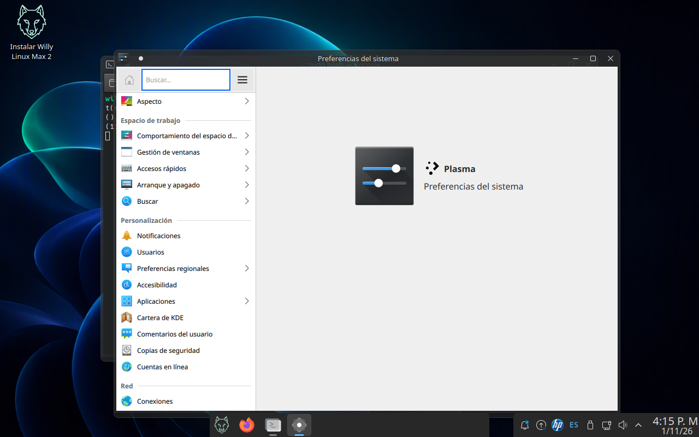
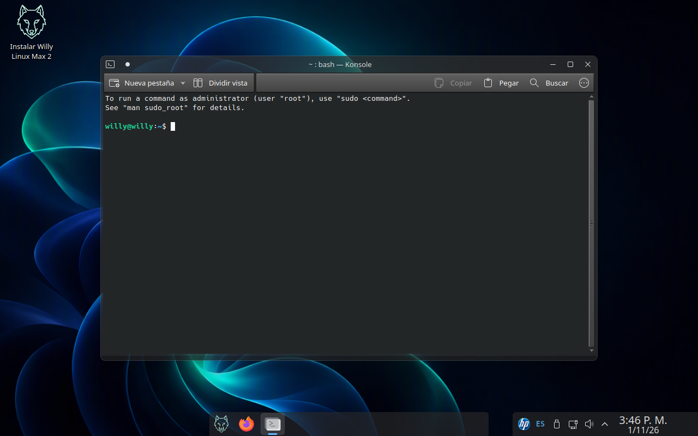
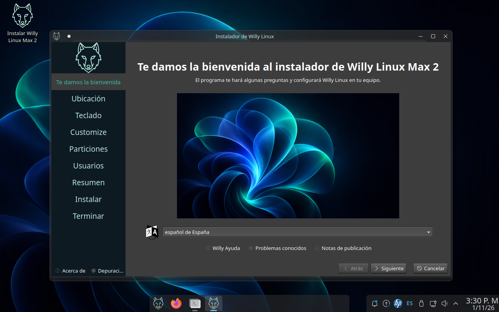
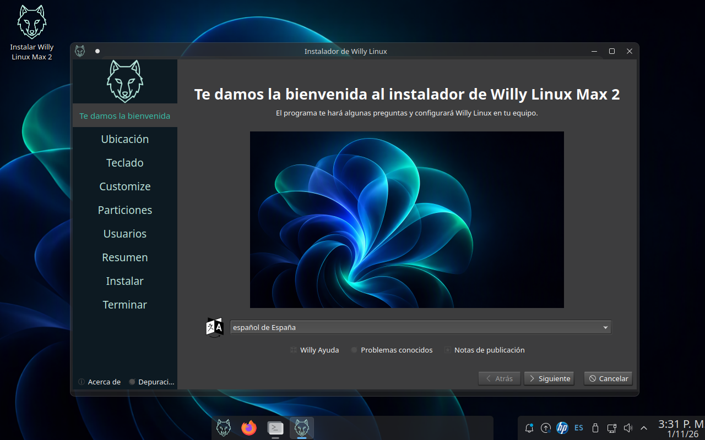

Todas las imágenes de esta página son capturas de pantalla de la sesión live
arrancada desde la ISO, tomadas el 1 de noviembre de 2026 en una máquina virtual a 1280×800 con
graphics VMSVGA. En un equipo real cambian la resolución, el escalado y los colores del monitor;
la disposición del panel y los temas son los mismos. Haz clic en cualquier captura para verla a
pantalla completa.
El escritorio
El panel se partió en dos tramos a propósito: el central, con el lanzador del lobo y
las aplicaciones ancladas, y el de la derecha con la bandeja y el reloj con la fecha debajo de
la hora (con la fecha al lado, en un tramo de 18 % se salía del borde).
Preferencias del Sistema, en español El escritorio con el fondo «Willy Linux»,
el icono de Instalar Willy Linux Max 2 arriba a la izquierda, el panel en dos tramos y la ventana
de Preferencias del Sistema con sus categorías traducidas (Aspecto, Espacio de trabajo,
Personalización, Red). La pestaña «Info» que añade esta versión se abre desde el buscador de esa
misma ventana.

El buscador de Preferencias del Sistema La misma ventana con el buscador activo.
Sirve para localizar un ajuste sin recorrer las categorías; en esta imagen todavía no aparece el
módulo propio de Info, que es lo que se está verificando de la build en curso.

Konsola en la sesión live El aviso de sudo al abrir la terminal y el
aviso willy@willy:~$: el usuario de la sesión live es willy, sin
contraseña, con permiso de administración sin clave solo mientras se prueba el sistema.
El instalador
Calamares con la marca de Willy: el panel lateral con el lobo, la bienvenida traducida y
los tres enlaces de ayuda del pie (Willy Ayuda, Problemas conocidos y
Notas de publicación). El botón «Acerca de» y el de «Depuración» siguen los de Calamares.

Bienvenida del instalador Los ocho pasos del asistente en español: Ubicación,
Teclado, Customize, Particiones, Usuarios, Resumen, Instalar y Terminar. El selector de idioma
arranca en «español de España» y el fondo del panel lateral es el arte de Willy.

Paso de Ubicación Zona horaria y idioma del sistema instalado. Aquí se elige
America/Bogota y el español; lo que se seleccione en este paso es lo que queda en el
equipo al reiniciar.
Un detalle honesto: en la captura de arriba el paso tres sigue diciendo
«Customize» en inglés y el selector de idioma arranca en «español de España» en lugar de
«español de Colombia». Son dos cosas pendientes de traducir en el instalador, no un error de la
captura.
La identidad visual
El arte de los fondos es del proyecto, con licencia CC-BY-SA-4.0, y se sirve en dos
variantes para que el modo claro y el oscuro del escritorio combinen. Las resoluciones reales dentro
del ISO son 1366×768, 1920×1080, 2560×1440 y 3840×2160.
Fondo «Willy Linux» — variante oscura Floración en azul y verde sobre casi negro
(color de acento #01040f). Es el que se ve en las capturas del escritorio.Fondo «Willy Linux» — variante clara La misma composición para el modo claro, con
acento #def0fc. El paquete de fondo declara las dos variantes y Plasma las cambia con
el modo del escritorio.Menú de arranque (GRUB) El tema de GRUB de Willy reutiliza el fondo oscuro con el
logo, para que el menú de arranque no se vea como el de otra distribución.Fondo del instalador La marca del instalador se pinta sobre el mismo lenguaje
visual; el logo del lobo va en el panel lateral izquierdo.El lobo El logo del proyecto, en 16, 24, 32, 48, 64, 128, 256 y 512 px más una
versión vectorial. Sustituye a los iconos de la marca anterior en los sitios donde el escritorio
pide start-here-kde o distributor-logo: el botón del panel, el menú de
aplicaciones, «Acerca de este sistema», el instalador y la pantalla de acceso.
Lo que no se puede capturar en una máquina virtual: el splash de arranque
(Plymouth) y la pantalla de apagado. VirtualBox en modo sin interfaz no dibuja Plymouth, así que esas
dos piezas solo se han comprobado en hardware real. No hay captura de pantalla de eso en esta
galería porque no existe, no porque se haya ocultado.